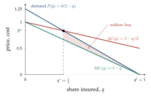

4.8. Generalisations#
Advanced: for research students
This section replaces the uniform distribution and linear payoffs with general ones, studies existence, multiplicity and welfare ranking of equilibria, shows how certification grades restore trade, and introduces the demand–cost-curve framework used in empirical work on insurance.
Why generalise? The uniform model gives a knife-edge answer: either nothing trades (\(k<2\)) or everything does (\(k\ge2\)). Real markets show partial unravelling, as in the Harvard example. The general model explains when unravelling is partial, why there can be several equilibria, and how to measure the welfare loss with data.
4.8.1. General qualities and values#
Let quality \(\theta\) have a continuous distribution \(F\) with support \([\underline\theta,\bar\theta]\). A seller values keeping a unit at \(s(\theta)\) and a buyer values it at \(b(\theta)\), where \(s\) and \(b\) are continuous and strictly increasing and \(b(\theta)\ge s(\theta)\), with strict inequality for \(\theta>\underline\theta\). At price \(p\), the units offered are those with \(s(\theta)\le p\), and buyers’ willingness to pay is
The equilibrium price (Definition 4.3) is \(p^*=\max\{p:\varphi(p)\ge p\}\).
Lemma 4.2 (Willingness to pay rises with the price)
\(\varphi\) is nondecreasing.
Proof of Lemma 4.2
Let \(c=s^{-1}(p)\) and \(c'=s^{-1}(p')\) with \(p<p'\), so \(c<c'\). Write \(B=b(\theta)\). The units offered at \(p'\) are those offered at \(p\) plus those with \(\theta\in(c,c']\). So \(\varphi(p')\) is a weighted average of \(\varphi(p)=\E[B\mid\theta\le c]\) and \(\E[B\mid c<\theta\le c']\). The second is at least \(b(c)\), because \(b\) is increasing, and the first is at most \(b(c)\). A weighted average of a number and something at least as large is at least the number, so \(\varphi(p')\ge\varphi(p)\).
Proposition 4.7 (Existence and complete unravelling)
An equilibrium price exists and satisfies \(p^*\ge s(\underline\theta)\). There is complete unravelling (\(p^*=s(\underline\theta)\), so that only the lowest quality trades) if and only if
Proof of Proposition 4.7
At \(p=s(\underline\theta)\) only \(\underline\theta\) is offered and \(\varphi(p)=b(\underline\theta)\ge p\), so the set \(A=\{p\ge s(\underline\theta):\varphi(p)\ge p\}\) is non-empty. It is bounded above by \(b(\bar\theta)\), since \(\varphi\le b(\bar\theta)\). Under our continuity assumptions \(\varphi\) is continuous, so \(A\) is closed and has a maximum. The characterisation of complete unravelling is a restatement: \(p^*=s(\underline\theta)\) exactly when no larger price lies in \(A\).
For the uniform model, \(s(\theta)=\theta\), \(b(\theta)=k\theta\) and the condition is \(k<2\). Exercise 4.14 shows how it depends on the shape of the distribution: more mass near the top makes complete unravelling harder.
Proposition 4.8 (Several equilibria, ranked)
If \(p_1<p_2\) are both fixed points, \(\varphi(p_i)=p_i\), then the outcome at \(p_2\) Pareto-dominates the outcome at \(p_1\): buyers’ expected surplus is zero at both, every seller who trades at \(p_1\) is strictly better off at \(p_2\), and no seller is worse off.
Proof of Proposition 4.8
At a fixed point buyers pay exactly their expected value, so their expected surplus is \(\varphi(p_i)-p_i=0\). A seller with \(s(\theta)\le p_1\) gets \(p_1\) at the first and \(p_2>p_1\) at the second. A seller with \(p_1<s(\theta)\le p_2\) keeps his unit (worth \(s(\theta)\)) at the first and sells for \(p_2\ge s(\theta)\) at the second, so he does not lose. Sellers with \(s(\theta)>p_2\) are unaffected.
Multiplicity arises when \(\varphi\) crosses the \(45^\circ\) line more than once, which happens when a block of good units joins the market as the price rises past a threshold (Exercise 4.15). Our selection rule picks the highest fixed point. Wilson (1980) shows that when there are several candidate prices, which outcome arises depends on how prices are set (by an auctioneer, by sellers or by buyers). The idea behind our selection rule is that a buyer who offers more attracts better units, so low-price outcomes are vulnerable when buyers can raise their offers. Levin (2001) shows that more asymmetric information need not always reduce trade, which is a reminder that the comparative statics of these models are subtler than the uniform example suggests.
4.8.2. Certification grades#
Proposition 4.6 certified one fact, \(\theta\ge a\). Suppose instead a certifier sorts units into \(n\) grades of equal width \(w=1/n\): \([0,w),[w,2w),\dots,[1-w,1]\). Buyers see the grade but not \(\theta\), so each grade is a separate market.
Proposition 4.9 (Finer grades restore trade)
Suppose \(\theta\) is uniform on \([0,1]\), \(s(\theta)=\theta\), \(b(\theta)=k\theta\) with \(4/3\le k<2\), and grades have width \(w\). Then every unit outside the bottom grade trades, the bottom grade unravels completely, and the surplus lost is \((k-1)w^2/2\), which tends to zero as \(w\to0\).
Proof of Proposition 4.9
Take a grade \([L,L+w]\). By the argument of Proposition 4.6 with the grade’s own floor and ceiling, all units in the grade trade if and only if buyers’ value of the average unit covers the best seller’s outside option: \(k(2L+w)/2\ge L+w\), which rearranges to \(L(2k-2)\ge w(2-k)\). For \(L\ge w\) this holds whenever \(2k-2\ge2-k\), i.e. \(k\ge4/3\). For the bottom grade, \(L=0\), and the market in that grade is the market of Theorem 4.1 scaled by \(w\): nothing with \(\theta>0\) trades. The lost surplus is \(\int_0^w(k-1)\theta\,d\theta=(k-1)w^2/2\).
Coarse information can therefore go a long way. With \(k=1.5\), two grades already recover 75% of the surplus, four grades about 94%, and ten grades 99%. This is one reason why grading schemes (energy ratings, credit ratings, hygiene scores) are so common.
4.8.3. Insurance: demand and cost curves#
Empirical work on insurance uses a graphical framework due to Einav, Finkelstein and Cullen (2010). Consumers differ in their expected cost to the insurer, which they know. A single contract is offered at price \(P\). Order consumers by willingness to pay and let \(q\) be the share who buy.
The demand curve \(P(q)\) is the willingness to pay of the marginal buyer.
The marginal cost curve \(MC(q)\) is the expected cost of the marginal buyer.
The average cost curve \(AC(q)\) is the expected cost of all buyers at \(q\).
Adverse selection means that those most willing to pay are the most expensive to cover, so \(MC(q)\) falls with \(q\) and \(AC(q)>MC(q)\).
Proposition 4.10 (Equilibrium and efficiency)
With competitive insurers earning zero profit on a single contract, equilibrium is where demand meets average cost, \(P(q^*)=AC(q^*)\). Efficient coverage is where demand meets marginal cost, \(P(q^{e})=MC(q^{e})\). Under adverse selection \(q^*<q^{e}\), and the welfare loss is \(\int_{q^*}^{q^{e}}\big(P(q)-MC(q)\big)\,dq\).
Proof of Proposition 4.10
Zero profit means the price equals the average cost of those who buy. A buyer should be covered if and only if his willingness to pay exceeds his own cost, so the efficient set is \(\{q:P(q)\ge MC(q)\}\). Since \(AC>MC\), at \(q^{e}\) we have \(P(q^e)=MC(q^e)<AC(q^e)\), so the price needed to break even there is too high for the marginal buyer, and equilibrium coverage is lower: \(q^*<q^e\). Consumers between \(q^*\) and \(q^e\) value cover above its cost but do not buy, losing \(P(q)-MC(q)\) each.
In Example 4.3, consumers with \(\theta\le q\) buy, so \(P(q)=k(1-q)\), \(MC(q)=1-q\) and \(AC(q)=1-q/2\). Equilibrium solves \(k(1-q)=1-q/2\), giving \(q^*=(2k-2)/(2k-1)\), which is the long-run share in the example. Since \(P>MC\) for every \(q<1\), efficient coverage is \(q^e=1\). The welfare loss is \((k-1)(1-q^*)^2/2\): with \(k=1.25\), \(q^*=1/3\) and the loss is \(1/18\approx0.056\), which is 44% of the efficient surplus \(0.125\).


Fig. 4.3 The Harvard example as demand and cost curves (\(k=1.25\)). Equilibrium is where demand meets average cost; efficiency would cover everyone. The shaded triangle between demand and marginal cost is the welfare loss, 44% of the attainable surplus.#
The framework also explains the remedies. A mandate moves coverage to \(q^e\) directly. A subsidy lowers the price consumers face and moves demand outward. And when the people who value cover most are the cheapest to cover (so-called advantageous selection, which some empirical studies find in particular insurance markets), \(MC\) rises with \(q\), and the market can provide too much cover.
Further reading. Akerlof (1970); Wilson (1980); Rothschild and Stiglitz (1976) on screening in insurance; Einav and Finkelstein (2011) for a survey of the empirical framework; Mas-Colell, Whinston and Green (1995), ch. 13, for a textbook treatment.